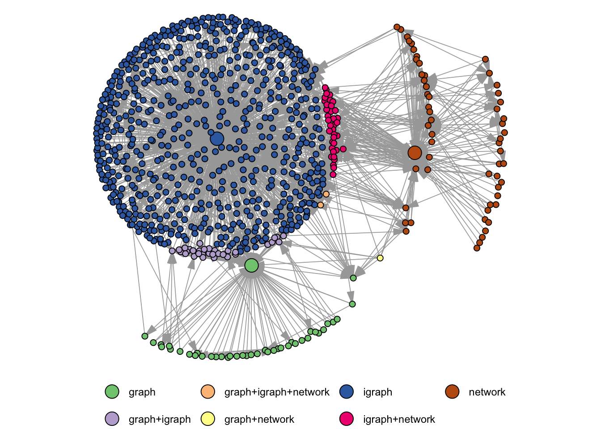

Introduction
What you will learn
How this book is organized
What you won’t learn
Prerequisites
(This section is taken and slightly adapted from R for Data Science 2e)
We’ve made a few assumptions about what you already know to get the most out of this book. You should be generally numerically literate, and it’s helpful if you have some basic programming experience already. If you’ve never programmed before, you might find Hands on Programming with R by Garrett to be a valuable adjunct to this book.
You need four things to run the code in this book: R, an IDE, a collection of “base” R packages, and a handful of other packages. Packages are the fundamental units of reproducible R code. They include reusable functions, documentation that describes how to use them, and sample data.
R
To download R, go to CRAN, the comprehensive R archive network, https://cloud.r-project.org. A new major version of R comes out once a year, and there are 2-3 minor releases each year. It’s a good idea to update regularly. Upgrading can be a bit of a hassle, especially for major versions that require you to re-install all your packages, but putting it off only makes it worse. We recommend R 4.3.0 or later for this book.
IDE
We make no assumption about your integrated development environment. RStudio is a popular choice for R programming, which you can download from https://posit.co/download/rstudio-desktop/. RStudio is updated a couple of times a year, and it will automatically let you know when a new version is out, so there’s no need to check back. It’s a good idea to upgrade regularly to take advantage of the latest and greatest features. For this book, make sure you have at least RStudio 2022.02.0.
But nothing will stop you to use other environments, such as vscode, emacs, or vi if you are already used to them.
The “base” Packages
When it comes to performing data science tasks with R, there are many excellent packages (or even package ecosystems) to choose from. There is for instance the tidyverse, data.table, or rpolars. All have there advantages and disadvantages but ultimately, they allow to do similar tasks with varying syntax.
In the R world for networks, there are far less choices and for the most basic network analytic tasks, there are essentially two packages: igraph and sna.
We will discuss these packages here and motivate why we would recommend igraph as the goto package for standard network analytic tasks. But that does not render sna and its companion network void. On the contrary, there are some essential modelling tasks which can only be done within the realm of network.
Both igraph and network also provide data structures which facilitate to store and process network data. There also once existed the package graph but that is not available on CRAN anymore, only via Bioconductor.
The figure below shows how many packages on CRAN rely on those three packages (i.e. they are mentioned in Depends, Imports, or Suggests).
The figure was produced with the help of the cranet package. igraph seems to be clearly favored by the R community. So if you install a package for, say, signed network analysis, chances are high that it depends on the graph structures provided by igraph. Besides the data structures, the package offers a large variety of network analytic methods which are all implemented in C. The methods are well optimized and also work nicely for large graphs.
The network package historically shares some commonalities with igraphs data structures. The package itself, though is really only providing the data structure and no analytic methods. The sna package (link) implements network analytic tools using the data structures of network. Overall, the syntax and provided methods are very much comparable between igraph and sna and they are almost interchangeable in this regard. The advantage of igraph is its speed. I have run several benchmark tasks and igraph usually comes out on top. That being said, there is no real case to be made against network/sna. If you are into statistical modelling of networks, then that should actually be the preferred choice since the ergm package is build on top of network. In this case you probably also want to look at the meta package statnet (link) which includes network, sna, and ergm (among other packages).
Note that the package intergraph (link) can be used to quickly switch representations between igraph and network.
The igraph package will play a major role in the Part on Descripitve Network Analysis, while network will be more prominent for Inferential Network Analysis.
Other packages
[LIST USED PACKAGES WITH DESCRIPTION]